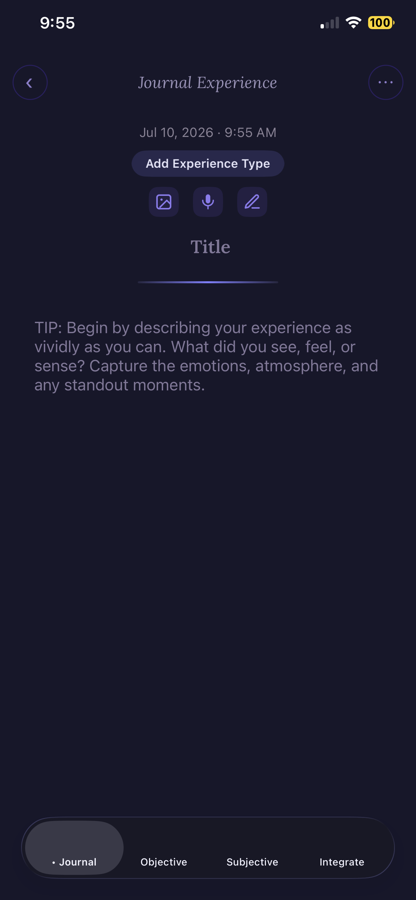
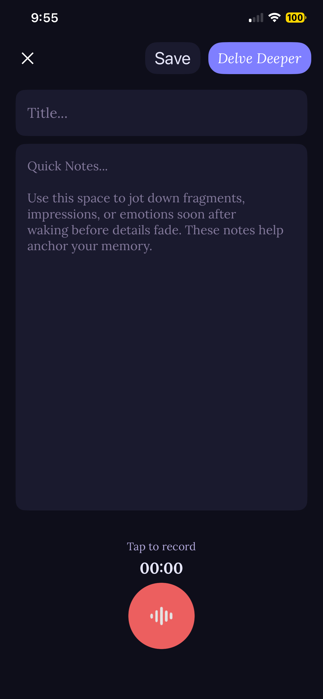
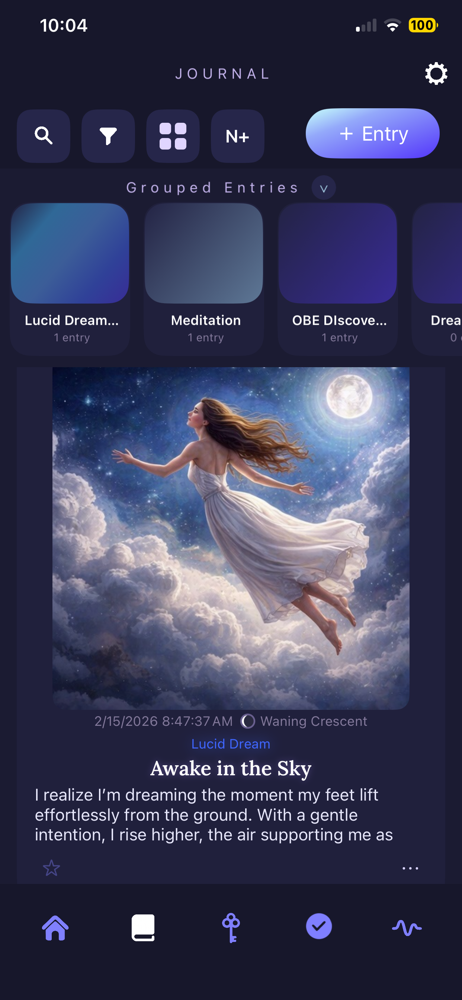
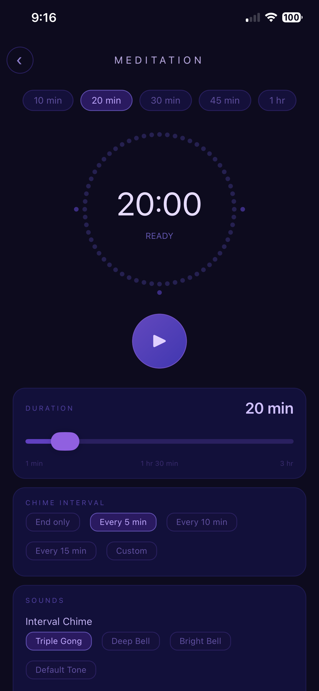
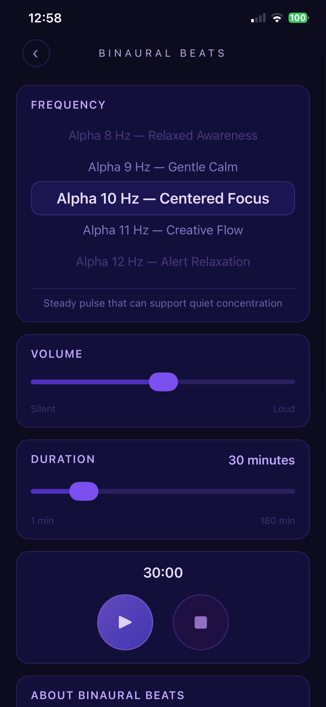
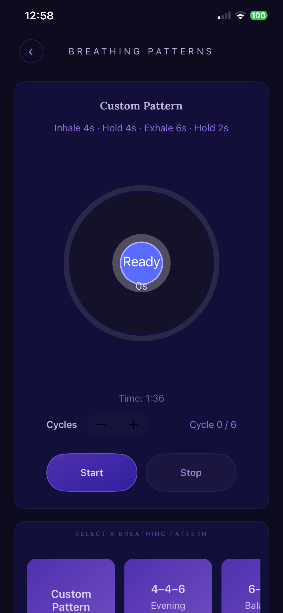
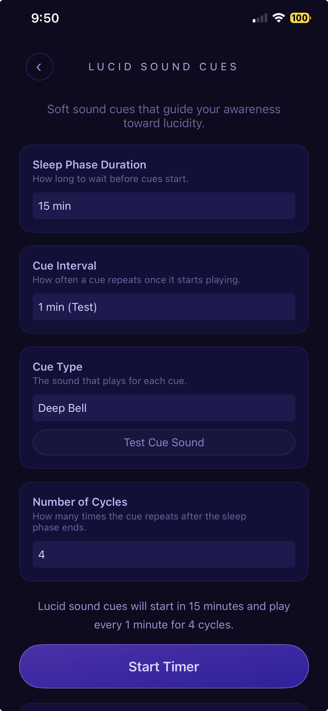
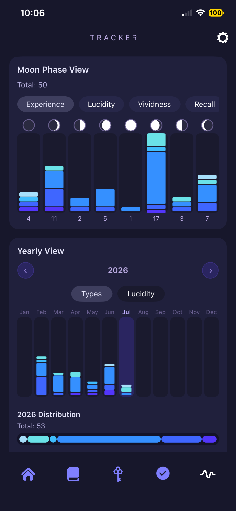

a journal & a practice
A sanctuary for your
inner experiences.
One quiet place for your dreams, your meditations, and all the liminal spaces between waking and deep sleep.
why this exists
Your attention holds power.
Most of the day, it moves outward, pulled by our senses toward the world around us: work, screens, other people, everything happening outside of us.
But there's another direction, one where we turn inward. When we learn to hold onto that thread of awareness as we move through the liminal states between waking and deep sleep, we strengthen our ability to recognize and enter these experiences consciously.
DreamWave exists to help you expand your awareness inward toward these experiences and build a practice around them, bringing these experiences together so what happens in your dreams, your meditations, and the space between waking and sleep becomes something you integrate into waking life.
bringing it together
What becomes possible when
you bring them together.
These inner experiences are communicating with you. When you bring them together in one place, insights and connections form. A deeper language of symbols and awareness emerges. Through integration, a different kind of understanding develops, one that cultivates a deeper knowing, a deeper wisdom of yourself and the nature of yourself.
One private space, on your own device, to keep record of your inner experiences and cultivate a daily practice that supports inner exploration.
This is a calling for those who want to remember.
how it works
Record. Reflect. Cultivate.
Three simple rhythms practiced daily.
Record
The experience while it's at the forefront of your memory.
Reflect
On symbolic language, waking connections, and deeper meanings of your experience.
Cultivate
A daily inner practice to build a deeper relationship with your inner world.
inside the app
Supporting your inner journey.
Everything within is shaped to support your inner life: one quiet space to record your experiences, deepen your practice, and watch it all unfold over time. It begins with the journal.
the journal
One entry for every
inner experience.
Every entry adapts to whatever you're recording, whether a dream, a meditation, or a lucid or out-of-body journey. It holds as much or as little as you like, and four tabs let you go only as far as you want:
- JournalThe story in your own words, with room for photos and audio.
- ObjectiveOverall measurable metrics as well as metrics for each experience type, plus log waking-life connections.
- SubjectiveThe felt sense: log emotions, add and create symbols, reference themes.
- IntegrationWeave it into waking life, with an optional Socratic AI to reflect alongside you.



It all belongs to you.
- Yours, on your device. Every experience is saved locally on your phone and stays entirely yours.
- Export freely. Download your audio recordings and export any entry to PDF or DOC to keep on record.
- Share cards. Send a card of an entry's story, showing only the journal text, so the private details from your other tabs stay private.
- Optional AI. The Socratic AI in Integration is entirely optional. If you decide to use it, that single entry is sent to the AI provider to generate its response, and how that information is handled falls under their terms, not ours. See how AI is used.
tools for the threshold
A Quiet Toolkit for
the Spaces Between




your practice & progress
Create Your Own Practice,
and Keep Track of It


the invitation
Awaken, and remember.
Bring the luminosity of your inner experience to waking life, widening your awareness and deepening your presence across both your inner and outer worlds.
There's a frontier inside every one of us, available to be explored. The calling is now.
leave a review
Your support means so much to us. If you love DreamWave as much as we do, please consider leaving us a review on the App Store. It helps us reach others who are ready to explore their inner world.